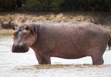
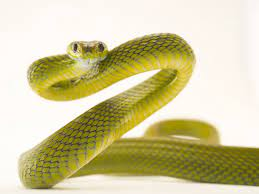
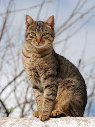
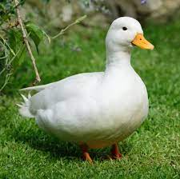
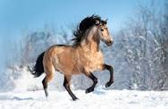
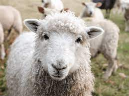

a lion

hippopotamus

snake
domestic animals
Domestic animals are animals that have been bred by humans over generations to live in close association with people. They are often used for food, transportation, companionship, or labor. Domestic animals have been a part of human society for thousands of years, and they play an important role in our lives.
examples of domestic animals are:
- pigs
- cats
- dogs
- horses
- cows
- goat
- sheep 
- cows
- sheep
- chickens
- pigs
- horses
- ducks 
cat

dog

horse
farm animals
Farm animals are animals that are raised on farms for their meat, dairy products, eggs, fur, or labor. Some of the most common farm animals
they include:
duck

chicken

sheep